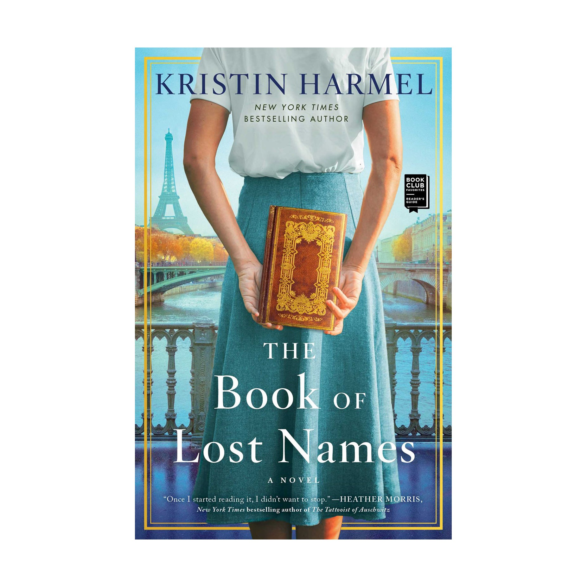

Last summer I went to Portugal with my family for a week, where we visited Lisbon, Porto, and Lagos. Each city had its own unique atmosphere and style, which made it fun to explore the areas. We got to learn the history of Lisbon through a walking tour of the city while also taking in the beautiful views. In Porto we went on a wine tour as well as a river cruise along the Douro River. Finally, in Lagos we got to relax on the beach and enjoy the different beaches.
My favorite restaurant is La Famiglia Giorgio's in the North End Boston because they have a very large menu that the majority can be made gluten free. My family loves to go for special occasions like birthdays where I usually get the chicken parm and it is delicious.
Although my favorite restaurant is Italian cuisine, my favorite food is a Greek dish called Yemista (stuffed tomatoes). Yemista is a traditional Greek dish that is tomatoes, peppers, or zucchini stuffed with rice and ground beef with potatoes, cooked in the oven. My mom often made this meal for my family and it has always been my favorite meal since I was young.
| Name | Image | Author | Summary |
|---|---|---|---|
| The Book of Lost Names |  | Kristin Harmel | The Book of Lost Names is a historical fiction novel set during WWII in Nazi-occupied France. The main character Eva Traube is a Jewish woman who is forced to leave Paris and move to the country where she joins the resistance in help Jewish children escape to Switzerland. |
| People We Meet On Vacation | |
Emily Henry | People We Meet On Vacation is a romance novel about two friends Poppy and Alex who become best friends in college. They make a pact to vacation together every year until one year when something changes. Poppy wants to reconcile their friendship and plans one last trip in the hopes of doing so. |
| The Women | |
Kristin Hannah | The Women is a historical fiction novel based during the Vietnam War. The story follows an Army Nurse named Frankie McGrath and and her experiences on the frontlines as well as her struggles when she goes back home. |
| The Hunger Games | |
Suzanne Collins | The Hunger Games is a dystopian novel where society is divided into twelve districts with The Capitol at the center. The Capitol devises an annual Hunger Games where one boy and one girl from each district is selected and forced to compete against each other. The story is centered around Katniss Everdeen from District 12 who volunteers for her sister. |